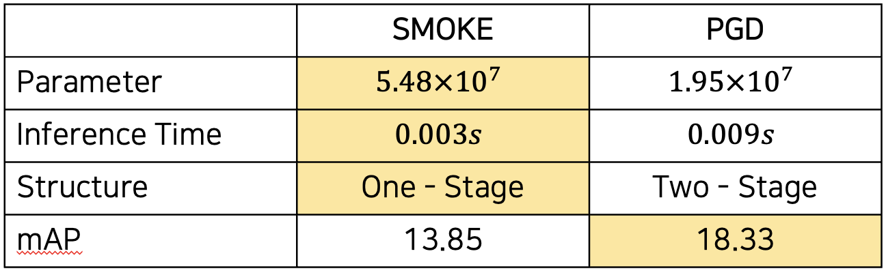
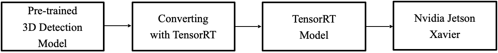

팀원 소개 (Team Notion)
| 이름 | 역할 | 링크 |
|---|---|---|
| 김형석 | • Data Analysis, Coordinate Converting • Visualization(3D-2D Projection, BirdeyeView) • Inference Engine, Web Demo(Streamlit&FastAPI) • Model Train & Inference • Building a development environment(Server) | Github Notion |
| 이동훈 | • Data Analysis & Converting, Coordinate Converting • Visualization(BirdeyeView) • Model Train & Inference • Model Research • Presentation | |
| 전지용 | • Data Analysis & Converting, Coordinate Converting • Visualization(Danger Object) • Inference Engine, Web Demo(Streamlit&FastAPI) • Model Train & Inference • Presentation | Notion Github |
| 정원국 | • Data Analysis & Converting, Coordinate Converting • Visualization(BirdeyeView) • Model Train & Inference • Model Research • Presentation | |
| 한상준 | • Model conversion • Inference Engine, App Demo(tkinter) • Model Train & Inference • Building a development environment(Server, Edge Device) |
프로젝트 개요
기획 배경
운전 초보인 내겐 운전이 너무 힘들다! → 어떻게 하면 도움을 줄 수 있을까?
- 브레이크 지금 밟아…?
- 끼어들기 어떻게 대처하지?
- 갑자기 사람이 튀어나오면 어쩌지..
문제에 대한 수요 설문
설문조사 참여자 : boostcamp AI Tech 캠퍼 80명 / 서울 소재 대학 재학생 60명
- 초보 운전자의 운전 중 애로사항 중 급정거 및 끼어들기 대응이 약 60% 를 차지
- 안전 주행 시스템의 이용 의향이 약 85% 로 수요가 높을 것으로 조사 됨
문제 정의
초보운전자의 사고 위험 향상 원인은?
- 좁은 시야로 인한 상황 판단 미숙
- 초보 운전자의 시야, 경력 운전자의 20% 수준
- 좌우 탐색 시간은 경력 운전자의 25%에 불과
- 차량의 거리 판단의 어려움
- 전방차량과의 안전거리 확보 미숙
서비스 시나리오
초보 운전자를 위한 주행 보조 시스템
- 초보 운전자가 차량에 탑승
- 블랙박스를 주행 안전 모드로 설정
- 주행 시작
- 위험 상황 발생
- 안전 시스템에 의해 단계별 경고 안내
- 운전자는 경고를 확인하고 상황 판단
기술 선정
What we do?
차량 검출
거리 & 방향 검출
위험도 판정
.png)
경고 전달
Why 3D Object Detection?
거리, 방향 검출이 필요
| 2D Detection | 3D Detection | |
|---|---|---|
| 거리 탐지 | X | O |
| 방향 탐지 | X | O |
| Inference 속도 | 빠름 | 중간 |
| Task 난이도 | 쉬움 | 어려움 |
- 2D Detection
- 거리와 방향 같은 추가적인 정보
- Depth Estimation이나 장면 인식 등 추가 적인 Task 필요
- 사용의 편의성을 떨어뜨리는 여러 조건 필요
- 거리와 방향 같은 추가적인 정보
- 3D Detection
- Object의 좌표계 예측
- Object의 거리와 방향까지 함께 판단
- Task 난이도
- 관련 공개 자료가 너무 적음
- 기술들의 난이도가 높음
- Task에 대한 도메인 지식을 학습을 하는데 어려움
- Object의 좌표계 예측
2D Object detection
3D Object detection
Why monocular?
- lidar센서 포함 Fusion 방식 vs Only Camera, Monocular 방식
- 선정 Key Point
- 서비스 Target (초보자)
- 비용
- 일정 수준의 성능
| Lidar | Monocular | |
|---|---|---|
| Target 적합도 | 낮음 | 높음 |
| 비용 | 약 700만원 | 약 30만원 |
| 성능 | 매우 높음 | 중간 |
| Task 난이도 | 높음 | 높음 |
How to define Rule base Danger Level
- 위험 상황의 정의 (모든 상황을 파악하기 어렵기 때문에 특정 상황으로 한정)
- 옆 차선에서 끼어드는 경우
- 앞 차와의 거리 조절이 안되는 경우
- 위험 수준의 정의
- 안전(Safe)
- 조심(Warning)
- 위험 (Danger)
- 위험 측정 방식
- 시속 60km 기준 : 제동거리 44m
- Case 1 : 옆 차선에서 끼어드는 경우
- 50M 내 Yaw가 내 차선방향(±7º~30º)으로 들어올 때 → Warning
- 25M 내 Yaw가 내 차선방향(±7º~30º)으로 들어올 때 → Danger
- Case 2 : 앞 차와의 거리 조절이 안되는 경우
- 전방의 차량 간격이 50M 내로 줄어들 때 → Warning
- 전방의 차량 간격이 25M 내로 줄어들 때 → Danger
수행 절차 및 방법
프로젝트 진행 Pipeline
KITTI - Pretraining Dataset
- 이미지 개수 : 14999장
- 이미지 크기 : 1242 x 375
- 데이터 구성 : streo, optical flow, visual odometry, 3D object Detection, 3D tracking
- 데이터 특징 : 맑은 날씨
- 클래스 구성 : car, pedestrian, cyclist, van, truck, tram, misc, person_sitting
- Annotation 정보
- label (str) : 차, 보행자 등의 라벨 정보 문자열 (‘Car’, ‘Pedestrian’, …)
- truncation (float) : 이미지상에서 물체가 잘려 있는 정도
- occlusion (int) : 폐섹 수준(camera 시야 기준으로 추측 됨), 물체가 가려진 정도
- alpha (float) : 관측각, 관측자(자율주행자동차) 기준 물체가 위치한 각도
- xmin (float) : image 상에서 물체를 감싸는 2d bbox의 left-x
- ymin (float) : image 상에서 물체를 감싸는 2d bbox의 top-y
- xmax (float) : image 상에서 물체를 감싸는 2d bbox의 right-x
- ymax (float) : image 상에서 물체를 감싸는 2d bbox의 bottom-y
- Height (float) (y) : Camera 좌표계 상에서 물체의 높이(in meters)
- Width (float) (z) : Camera 좌표계 상에서 물체의 너비(in meters)
- Length (float) (x) : Camera 좌표계 상에서 물체의 길이(in meters)
- tx (float) : Camera 좌표계 상에서 물체의 x(in meters)
- ty (float) : Camera 좌표계 상에서 물체의 y(in meters)
- tz (float) : Camera 좌표계 상에서 물체의 z(in meters)
- ry (float) : Camera 좌표계 상에서 물체의 yaw (pi:좌측 ~ 0:정면 ~ pi:우측)
강건한(Robust) 융합 센서 객체 인식 자율주행 데이터 - Finetuning Dataset
- 이미지 개수 : 360,000개
- 이미지 크기 : 1920 X 1200
- 데이터 구성 : Image , 2D 바운딩 박스, 2D 세그멘 테이션, 3D 바운딩 박스
- 데이터 특징 : 2가지 촬영 시간대, 2가지 날씨, 5가지 도로 유형으로 매우 다양한 상황에서 촬영됨
- 클래스 구성 : bicycle, bus, car, motorcycle, other vehicles, pedestrian, truck

- Kitti Format 으로 Finetuning Dataset 변환
- Ai-hub 좌표축을 KITTI 좌표축으로 변환
- 시각화를 위한 Carlibration 수치 보정
- Yaw(방향) 값 기준 통일
- Class 병합 (car, pedstrian, cyclist)
- 최종 Camera 기준 Kitti format label Data 작성
Model 선정
- 선정 기준
- Camera Only로 사용 가능해야 함 → Monocular Model
- MMDetection 3D에서 사용 가능 → Smoke & PGD
- Real Time Inference가 가능해야 함→ Inference Time 0.2s
- 적정 수준의 성능

→ SMOKE Model 최종 선택
SMOKE (Single-Stage Monocular 3D Object Detection via Keypoint Estimation)
2D bbox 예측하고 이를 바탕으로 3D bbox를 예측하는 기존의 방식과는 다르게 바로 3D bbox 예측
- One-Stage architecture 제안
- multi-step disentanglement approach 제안
- 중심/크기/각도로 분리하여 3D bbox 예측

Metric 정의 - DDS(Danger Detection Score)
-
위험 기준 설정
-
정면 차간 거리 (25m~50m)
-
끼어들기 차량의 각도 (7도~30도)
-
옆 차선의 차량과의 거리 (1.5m)
-
-
경고 레벨에 따른 confusion matrix
Model Serving
-
Web
- 개발 목적 : Inference Engine 개발, 협업, 데모
- 개발도중 Edge device 환경 구성에 문제 발생, Edge device 없이 Inference Engine 개발 필요
- 원활한 협업을 위해 기존 개발 환경(ai-stages server)에서 바로 동작하고, 각자의 작업물을 병합하여 결과를 볼 수 있는 도구 필요
- 다른 사람들에게 손쉽게 보여줄 수 있는 방법이 필요
Web Demo Flow
- 개발 목적 : Inference Engine 개발, 협업, 데모
-
Inference Engine
Inference Engine Structure
Set Engine Sequence
Run Engine Sequence
-
Edge Device (APP)
- 개발 목적 : 프로젝트 실현 가능성 검증 , 향후 실험
- 프로젝트의 실현 가능성을 확인하기 위해서는 Edge Device에서의 사용 가능 여부 검증 필요
- 짧은 일정으로 실제 목표인 블랙박스에 Serving하지 못하는 상황, 그러나 가능성이 있는지 확인
- 개발 목적 : 프로젝트 실현 가능성 검증 , 향후 실험

Model serving flow for edge divide(Jetson Xavier)
Inference flow in Jetson Xavier
결과
실험 및 결과
→ Fine Tuning + Augmentation을 사용하여 프로젝트 목표에 맞게 결과를 도출
No1. Inference Image
No2. Inference Image
Inference Time Check
- CUDA 코어 개수 차이 10:1 / 소비 전력 차이 8:1
→ 큰 차이에도 속도는 2배 정도 밖에 안 느려지지 않았고, 경량화 가능성 확인하였음
Model Deploy
Web Demo(A100)

Left : only KITTI dataset / Right : Our Model(KITTI + Finetuning)
Edge Device(Jetson Xavier)

결론 및 토의
프로젝트의 한계점
- 현재 실시간으로 수집되는 data들은 고려되지 못함
- 경고 자체가 Rull base로 이루어짐 (추론 결과값을 가지고 후처리)
- 너무 가깝거나 바로 옆에 있는 자동차의 경우는 잘 탐지하지 못하는 경우도 존재
- Monocular 모델 자체의 성능 개선 한계가 존재
향후 목표
- Active learning 또는 Self-supervised Learning을 통해 Data 관련 문제를 보완
- 새롭게 정의한 Metric을 전문가의 피드백을 받은 후에 경고 자체를 학습하도록 구조 개선
- 거리에 따라서 서로 다른 가중치를 주어 위험도를 학습하여 가까운 물체를 더 잘 탐지하도록 함
- Knowledge distillation, pseudo labeling 사용하여 모델의 성능 향상